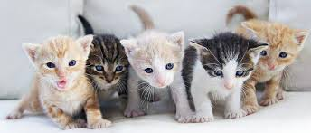

WELCOME TO MY BLOG OR WHATEVA
MY FAVORITE THINGS OF 2017-2018

Hi, i'm oumar and i am 17 years old. THESE WERE MY FAVORITE THINGS OF 2017-2018.
ANIMALS
My favorite thing are cats. Cats are so cute and fluffy and when get anapartment ofmy own, i strive to be a cat parent.
This is the best way to make sure my sister never comes to visit me. Shes afraid of cats af.
CUTE CAT VIDEOS!
My inspiration
besiddes my parents, my inspiration are the Obamas. They are the perfect example of a successful black family.
they make me want to strive for greatness as a minority and get the best education regardless of peoples opinions.
influential Athletes
My favorite athlete in American sports is definitely LeBron James. Not only living as the GOAT of basketball, he is also a family man and an education activist.
He opened a school in his hometown and wants to provide free education to those in need.
He plays basketballamazing and is the biggest threat to the Golden State warriors that rack up all stars and refs to ensure that they win against him/